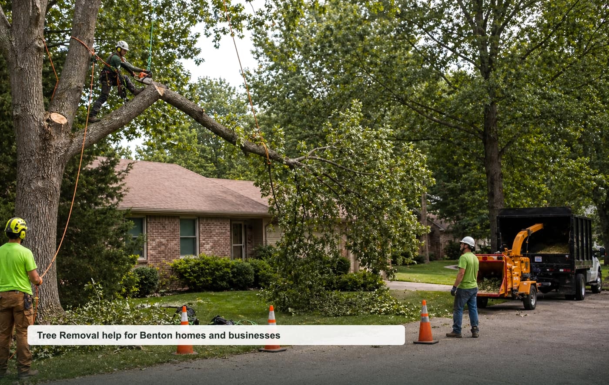

Tree Removal
Dead, leaning, hazardous, crowded, or unwanted trees around homes.
View pagetree removal Benton AR
A focused local quote request website for Benton, Saline County, and nearby communities.

Opportunity thesis
Tree removal has urgent storm demand, good ticket size, and clear quote criteria by location, hazard, and access.
The site is built around specific high-intent pages instead of one generic homepage. That makes it easier to test rankings, route leads by job type, and pitch a local business with clear ROI.
Service cluster
Dead, leaning, hazardous, crowded, or unwanted trees around homes.
View pageStorm damage, fallen limbs, blocked driveways, and urgent hazards.
View pageStump removal, surface roots, cleanup, and yard restoration.
View pageCanopy thinning, clearance, limb removal, and maintenance pruning.
View pageDifficult removals near roofs, fences, power lines, and tight access.
View pageBrush, small trees, storm debris, and prep for projects.
View pageBuyer-intent pages
Homeowner-focused tree removal quote requests for inspections, repairs, replacements, and planned projects in Benton.
View pageSmall business, property manager, and light commercial tree removal requests around Benton and Saline County.
View pageUrgent tree removal requests where response time, safety, access, and callback speed matter.
View pageLocal search page for nearby tree removal requests in Benton, Saline County, and surrounding communities.
View pageThese pages support nearby searches without claiming fake office locations.
Repeatable model
Start with tracked calls/forms, validate ranking movement, then offer a trial to the best local provider. Keep the lead flow exclusive once paid.
Planning guides
Local questions
Cost depends on project size, urgency, access, materials, labor, and the final scope confirmed by the provider.
Response depends on provider availability, weather, job type, and whether the request is emergency or planned work.
Nearby requests may be routed for Bryant, Bauxite, Haskell and surrounding Saline County communities.
Include your city, project type, rough size, visible symptoms, timeline, and the best callback number.
Request a local quote
Include the project type, rough size, city, urgency, and best callback number.